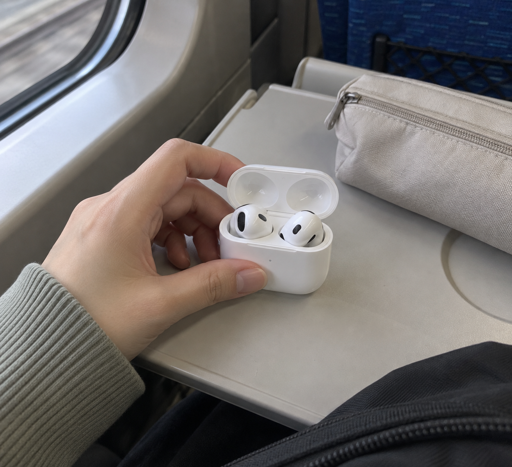

이 포스팅은 네이버 쇼핑 커넥트 활동의 일환으로, 판매 발생 시 수수료를 제공받습니다.
에어팟 5 무선충전 모델, 오픈형에 노이즈캔슬링까지 챙기고 싶다면

이어폰은 필요한데 실리콘 팁으로 귀가 꽉 막히는 느낌은 싫고, 기차에서는 주변 소리를 조금 줄이고 싶고. 이 두 가지를 같이 찾으면 선택지가 꽤 좁아져요.
에어팟 5 무선충전 모델은 오픈형 디자인에 액티브 노이즈 캔슬링을 더한 제품이에요. 관심이 가는 이유도 바로 이 조합이고요.
1. 오픈형의 선택 이유

귀를 감싸는 실리콘 팁 없이 쓰는 형태라 오픈형을 선호하는 분에게 맞는 방향이에요. 여기에 노이즈 캔슬링을 지원하니 이동 중 음악을 듣는 기능까지 함께 고를 수 있어요.

다만 귀를 밀폐하는 이어폰과 같은 착용감으로 생각할 필요는 없어요. 오픈형이 편한지부터 정하면 이 모델을 고를 이유가 훨씬 분명해져요.
(귀에 넣는 모양부터 마음에 맞아야 자주 꺼내 쓰겠죠.)
💚 오픈형 ANC·무선충전 모델 구성 보기2. 휴대폰은 가방에

이 무선충전 모델은 이어버드를 스와이프해 음량을 조절할 수 있어요. 짐을 들고 기차에 오르거나 가방에 휴대폰을 넣어둔 상황에서 눈길이 가는 기능이에요.
같은 에어팟 5라도 오늘 상품은 MKFT4KH/A, 무선 충전 케이스 모델이에요. 원하는 기능을 보고 골랐다면 구매할 때 이 모델명까지 맞추면 돼요.
3. 숙소에서도 툭

확인해둔 상품 표시 가격은 229,000원이에요. 오픈형 ANC와 이 충전 구성이 필요하다면 무선충전 모델의 가격을 기준으로 비교할 수 있어요.
케이스는 USB-C 외에 Qi 무선 충전기와 Apple Watch 충전기로도 충전할 수 있어요. 이미 쓰는 충전기를 함께 챙기는 분이라면 여행 가방에 어떤 충전 조합을 넣을지 쉽게 떠올릴 수 있죠.
케이스에 나의 찾기용 스피커가 들어간 점도 선택 이유예요. 충전 방식과 케이스 기능까지 챙기고 싶다면 기본형과 구분해서 이 모델을 보세요.
(작은 케이스는 가방 속에서 찾는 순간에도 존재감이 크니까요.)
오픈형은 유지하면서 노이즈 캔슬링과 무선 충전까지 원했다면, 아래 상품에서 모델명과 구성을 맞춰 고르세요.
💚 에어팟 5 MKFT4KH/A 가격·구매 옵션 보기가격은 2026년 10월 6일 확인한 상품 표시 가격으로, 옵션·배송비·구매 시점에 따라 달라질 수 있어요.